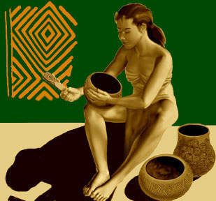
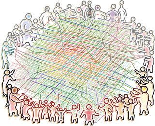
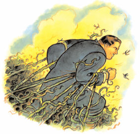

Demokratik Müzik, Arabesk Referandum
St.Louis’e dönerken Müslüm Gürses dinliyordum uçakta. Altımda serili uçsuz bucaksız Kuzey Amerika kıtası, Müslüm babanın dertli nameleri ile inledi yeminlen. Savulun lan hostes tayfası, dünya tersine dönse vazgeçmem anladın mı diyesim geldi çok feci, ama bir kültür şoku durumuna mahal vermemek için sesimi kıstım. Rakı da servis etmiyorlar bu gavur uçaklarında. Halbu ki Seattle’a giderken Fikret Kızılok nameleri eşlik etmişti de Rocky dağlarını bizim Toroslara benzetip memleket hasreti depreştirmiştim. Geçen gün 5N1K programında Fazıl Say‘a denk gelince aklıma ilk bu geldi. Klasik Müziği severek sıklıkla dinlememe karşı, Müslüm babanın damardaki yeri ve zamanı başka, Bethoven’in Bach’in yeri ve zamanı başka.
Ama arabesk tartışması ve yozlaşma diyince aklıma gelen ikinci şey Muhsin Bey filmi oldu. Köyden kente göç etmiş Ali Nazik’in, şehir de müzisyen olup kolay yoldan para ün kadın arayışına karşılık, Muhsin Bey iyi bir müzisyen olmak için notasıyla şöfejiyle çalışmayı, emeği, hakketmeyi, değerleri savunur. Filmin tüm olayının özeti çatıdaki intihar sahnesindedir. Ölmekten başka seçeneği kalmadığını düşünen Ali Nazik, çatıdan kendini atmak ister, ama korkusuna yenik düşer. Muhsin Bey gelir yanına, ikisi de yüksekten korkuyor, ikisinin de gözleri kapalı. “Sesime gel” der Ali Nazik, ve bu çağrıya kulak verir Muhsin Bey. İkisi de birbirine sarılmış, dans eder gibi, bir iki bir iki adımları sayarak çekilirler yüksekten: “Şimdi ben geri gidiyorum, sen ileri adım atıyorsun” diye diye değerleri temsil eden Muhsin Bey, kurtulmakdan başka hiç bir şeyi umursamayan Ali Nazik’i çeker alır ölümün eşiğinden. Bir kültür geriye giderken, başka bir kültür ileriye gider. Ve işte tam da orda, Ali Nazik’in, arabeskin, göçün getirdiklerinin yükselişi başlar bir ülkenin semalarında. Muhsin Bey’in ve önün taşıdığı değerlerin, kentli insanın, dürüstlük, erdem gibi değerlerin de düşüşü…
Hepimizin bildiği, Tanzimattan bu yana tekrarlanan bir hikaye var: Batılı fikirlerle donanmış aydınlar halkına yabancılaşmıştır. Halkını iyiliğe götürmek istese de halkın isteklerinden ve zevklerinden habersizdir. Bu argümanı öne sürenler ardına popülist sloganlar atmaktan da kaçınmazlar. Halka soralım bir! Halk bunu istiyor! Halkın sevdiği şeyleri hiçe sayamazsınız!
Soralım tabi eyvallah, her şeyi halka danışalım icabında Antik Yunan’daki gibi, ama toplumda bir de iş bölümü diye bir şey var. İş bölümünün niye ortaya çıktığı da çok belli, işlerin daha etkili bir şekilde yürümesi için. Herkes her şeyi kabaca yapacağına, herkes belli bir alanda uzmanlaşın, ürettiğimiz şeyleri değiş tokuş edelim, herkes kazansın. Sonra, bu değiş tokuşun da çok etkili olmadığını anladık, hadi bunun yerine para diye bir şey koyalım ortaya, herkes malının değerini belirlesin, ona göre alıp-satalım ürettiklerimizi. Bir kaç bin yıl ileri sar bandı, al sana karmaşık ekonomik ve sosyo-politik ilişkileri ile bügün yaşadığımız dünya. Tabi, sistem karmasiklastıkca uzmanlaşma ve ona paralel olarakta uzun bir eğitim de yanında geliyor. Sonuçta, en basit iş bile belli bir eğitim gerektiriyor, yapılan iş karmaşıklaştıkça o eğitimin süresi de uzuyor. Ne biliyim bugün bir tip eğitimin 6 yıl, turizm-otelcilik eğitimin ise 2 yıl olması, eğitim zorluklarının ise karşılaştırılamaz olması yapılan işlerin karmaşıklığıyla paralel.
Şimdi tıbbi bir problemim olsa gider bir doktora danışırım, hizmetinin karşılığı da parasıyla veririm. Doktor da ne sebze ne meyve yetiştirmekden anlamamasına rağmen, gider benim verdiğim parayla marketten yiyecek alışverişini yapabilir. Hukuki bir problemim olduğunda gider bir avukata, ekonomik bir konuda gider bir iktisatçıya, ev yaptırırken mimara mühendise danışırım di mi? Benim mesleğim neyse onda da insanlar bana danışır, ben de onlara verdiğim hizmet sayesinde ekmeğimi kazanırım. Toplumda iş bölümü dediğin böyle bir güzellik. Herkes belli bir alanda eğitim alıp belli bir foksiyonu yerine getiriyor olmasına rağmen, bütün diğer fonksiyonlardan da faydalanır.
Tabi pratikte işler biraz daha karmaşık. Bir kere çalışma hayatı sıkıcı olabiliyor ve birilerinin günlük ritmin sıkıcılığından bizi kurtarması yaratıcı eserlerle duygularımızı harekete geçirmesi gerekiyor. Burada sanat dünyası devreye giriyor. Bulunduğumuz yaşam koşullarının daha iyi hale getirilmesi gerekiyor burada bilim ve teknoloji devreye giriyor. Haklılık haksızlıklardan doğan çatışmaların düzenlenmesi gerekiyor. Burada anayasa, hukuk devreye giriyor. Herkesin can ve mal güvenliğinin sağlanması gerekiyor burada polis devreye giriyor. Ülkenin olası dış saldırılarından korunması gerekiyor ki vatandaşlar huzur içinde yaşayabilsin, burada ordu devreye giriyor. Bunların her biri de başka iş bölümleri ve başka eğitim süreçlerini gerektiriyor. Bir de bütün bu ülke içi ve ülke dışı işlerin çekip çevrilmesi işi var ki orada meclis ve siyasetçiler devreye giriyor.
Şimdi bütün bu adamlar belli eğitimlerden geçmiş, belli işleri yapmaya vakıf olmuş insanlar. Herkes kendi işine baksa, herkes kedi işini en iyi şekilde yapsa, işler tıkır tıkır yürüycek. Boşa kalan vaktinde de başkalarının keyfini kaçırmadan ne yaparsan yap, iste alsana çillop toplum. Tabı, gerçekte işler böyle olmuyor. Özellikle çıkarlarımız konusunda o kadar ipleri başkasına kaptırma taraftarı değiliz. Bir devlet çatısı altında bir toplum içinde yaşamak kendi yakınlarımızla kabile halinde yaşamakdan daha avantajlı, ama yine de insan dediğin herşeyden çok kendisini ve yakınlarını düşünen bir mahlukat (bkz. ortak mülklerin trajedyası). Normalde toplum yapısı, insanların bu fevri bencil hareketlerini, toplumun genel çıkarına ters düşeceği için kontrol altında tutma yönündedir. Politik bir gücü eline geçiren kafasına göre takılmaya başlayabilir, toplum burda devreye girip höt der. Ne biliyim, herkes kolay yoldan para kazanıp yan gelip yatmaya eğilimlidir, ama herkes kolay yoldan para kazanır yan gelir yatarsa, kısa zamanda toplumda üretim azalacağı için herkes kaybeder. O yüzden toplum kolay yoldan para kazanmayı yan gelip yatmayı kontrol altında tutar. Ürettiğin kadar tüketmelisin. Bu ürettiğin domates olur, fındık olur, apartman olur, sağlık olur, hizmet olur, para olur, müzik olur, resim olur, araştırma olur, yönetim olur vs. vs. Bu uretim tüketim kantarının ayarını kaçırdın mi, hangi ülke olursan ol batarsın, bak misal Amerika’da ki ekonomik krize.
Kritik olan konu bu üretilen şeylerin bir birleri ile olan ilişkisi, yani bir birlerine kıyasla değerleri. Domates yetiştirmekle ile sağlık hizmeti aynı şey değil, bir diğerinden daha değerli. Dedik ya, eskiden takas ediyorduk, ne biliyim 5 domates 1 kilo buğday ediyor, ve bunu yaparken de üretilen şeyleri yetiştirme zorlukları ve maliyetlerine bakıyorduk. Tabı, ne kadar ürettildiği ve ne kadar insanın onları tüketmek istediği de önemli. Meyve sebzede iş nisbeten kolay olsa da, biraz daha karmaşık üretimlere geldiğimizde karşılaştırmak da giderek zorlaşıyor. Şimdi bir saatlık sağlık hizmeti, kaç saatlık otel hizmetine bedel? Ne biliyim. Ya da üç saatlık polislik görevi, kaç saatlık hudut nöbetine bedel? İşler karmaşıklıp göz kararı değer tespiti yapmak zorlaştıkça başka parametreler devreye giriyor. Mesela, maliyet. Bir sağlık hizmetinin maliyeti nedir: Hastene masrafları, araştırma geliştirme masrafları, o doktorun aldığı uzun eğitimin maliyeti, bir hatanın yol açacağı masraflar vs. Buna karşılık bir otelcinin eğitim ve otel masraflarını koyuyoruz. İkinci önemli bir nokta, sağlık hizmeti vermeye hevesli ve doktor olmaya yeterli zihinsel donanıma sahip insan sayısını, sağlık hizmetine ihtiyacı olan insan sayısına (hemen hemen herkes) orani, öte yanda otelci olmaya hevesli insan saysını otel hizmetine ihtiyacı olan insan sayısına oranlıyoruz. Sonuçta, doktorluk hem çok daha yüksek maliyetli, yetiştirilmesi zor, buna rağmen hem de çok daha fazla insana hizmet ettiği için, daha düşük maliyetli, yetiştirilmesi kolay ve çok daha az insana hizmet eden otelcilikten daha değerli. Genel olarak, bir şeyin üretimi ne kadar zorsa ve buna paralel olarak topluma katkısı ne kadar büyükse, o kadar fazla toplumsal değeri oluyor.
Burada yapılan çok kritik bir hata toplumsal hizmet ve değer ilişkisinden çoğunluğun sevdiği değerli olur ilişkisini çıkarmak. Topluma doktorluk gibi direk bire bir hizmet sağlayanları genellikle toplum da sever, doktorları, avukatları, mühendisleri severiz hatta kızlarımızı da veririz seve seve o derece. Ama onları değerli yapan toplumdaki bireylerin onları sevmesi değildir. Yani, bireylerin bir şeye verdiği değerlerin toplami, o şeyi bir toplumsal değer yapmaz. Yemek-içmek hepimiz için çok değerlidir ama yemek-içmek bir toplumsal değer değildir çünkü toplum yapısına artı veya eksi bir şey katmaz (ha bireyler için çok önemlidir o ayrı). Toplumdaki insanlar bir hizmeti sevmese bile, o üretilen şey toplumdaki insanların genelinin hayatlarını daha iyi bir hale getiriyorsa değerlidir. Toplumsal değerin tanımı budur. Doktorları sevmeseydik de doktorluk hizmeti yine de değerli olacaktı. Avukatları değerli yapan insanların onları sevmesi değil, toplumsal hak ve hukuku sağlamaları. Sanatçıları yazarların düşünürlerin değerli yapan yapan insanların onları sevip sevmemesi değil, insanlığın ufkunu ileriye taşımaları. Kaç kişi Kant’tı Wittgenstein’i okur tanır bilir sever, onlar sevmeyince Kant’in Wittgenstein’in insanlığın düşün dünyasına kattığı değer azalır mi? İnsanlar sevdi diye Ayn Rand değerli bir filozof mu olur?
Peki, hayatımı daha iyi bir hale getiriyorsa neden sevmeyeyim? Mevcut kısa vadeli çıkarlarına ters düştüğü için ve uzun vadede hayatını daha iyi bir hale getirdiğini bulunduğun bireysel noktadan göremediğin için. Sana direk sunulan hizmetlerin değerini tartabilirsin, ama sana dolayli yoldan sunulan hizmetlerin değerini görmek o kadar kolay değil. Dedik ya, birey olarak çok daha kısa vadeli ve yakın çevremizi düşünüyoruz. Oysa, toplumsal değer dediğin, uzun vadeli ve toplumun geneline yayılan bir şey. Çok bilindik bir örnek, Atatürk cumhuriyeti kurduğunda reformları ardına ardına yaptığında kimsenin hoşuna gitmemişti, ama bu Atatürk’un bu ülkeye yaptığı hizmeti değersiz kılmaz, ki zamanla da ne kadar değerli olduğu anlaşıldı. Anlaşılmasaydı da değerli olucaktı. Bir çok toplumsal değer, insanlara direk değil dolayli yoldan uzun vadeli ve genele yayılan bir hizmet götürür, birey olarak bazen kaybetsekte, toplum olarak kazançlı çıkarız. (bkz mahpusların açmazı) Bazen polis sana ceza keser, mahkemede haksız bulunursun tepen atar, mühendise mimara para kaptırırsın, ama uzun vadede bu kurum ve kişilerin olması senin hayatını daha yaşanılabilir bir hale getirir.
Şimdi, arabesk mevzusuna dönersek. Arabesk müzik ve getirdiği kültür ve yaşam felsefesi, toplumdaki insanların yaşamını daha iyi bir yere götürmedi ve götürmez. Bu çok açık. Köyden kente göç eden, kültür şoku yaşayan, ekonomik olarak ezilen bir kitleyi, ne şehirli yaptı ne köylü kültürünü korudu. Ortaya koyduğu yeni karma kültür, ne göç edenlerin yaşamını iyileştirdi, ne de şehirdekilerin yaşamını iyileştirdi. Bu kültür köylü kökenli olmayan insanlara da yayıldıkça toplumun genel yapısını da tehdit etmeye başladı. Arabesk insanları daha iyi bir yaşama götüren, eğitim alması, ekonomik olarak daha iyi bir yere gelmesi, toplumun ürettiği nimetlerden faydalanması, kendi kültürünü geliştirmesinin yerine, yerinde durması, ezilmişliğini kabullenmesi, fırsatçı ve laubali olması, kendi çıkarından başkasını düşünmemesini, yeri gelince hak hukuk tanımaması gibi fikirleri aşıladı. Dikkat ederseniz, arabeskin aşıladığı fikirler fevri ve bencildir, tam da toplumun genel çıkarlarına zıt fikirler. Bireyler arasında bu kadar popüler olması, bireylerin zaten buna doğuştan eğilimli olmasından kaynaklanıyor. Dedik ya, bireyler zaten kendi çıkarlarını ve yakınlarını herşeyin üstünde tutma eğilimindeler.
Arabesk kültürü bizi insanlar arasında iş bölümü olan bir devlette hak ve özgürlere sahip uzun vadede herkesin kabile yaşantısına göre kazançlı çıktığı vatandaş olmakdan, güçlü olanın güçsüzü ezdiği kabile topluluğuna götürür. 5000-10.000 yıl önce insanlar gayet arabesk bir dünyada yaşıyorlardı aslında, hak hukuğun olmadığı, güçlü olanın güçsüzü ezdiği, ezilenin gayet boynu bükük oturduğu, yapabilecek başka bir şeyi olmadığı için mevcut durumunu kabullendiği, kendi çıkarı için fırsat kolladığı, efkardan cigara tellendirdiği bir tarihden geliyoruz. Bak mağara insanlarına hepsi arabesk fikirlerle yaşıyorlardı. Hatta sempanzelerin ve baboonların dünyası çok daha arabesk, güçlü olan erkek baboon 2-3 dışı baboonu koluna takar haremine götürür. Diğer erkek baboonları iter kakar, itilen kakılan alt sınıf baboonlarda ise koşar, akşamları efkarlanıp ince belli bardaktan raki yudumlarlar, ne yapsın gariplerim ne kadın var ne ekmek elde, lider baboonu devirmek için bir zayıf bir anını kollarlardı falan filan.
Buradan bakınca arabesk kültürün yavsaklığı ayyuka çıkıyor. Bu kültür resmen açık açık maymunların dünyasına geri dönelim diyor, hem de altında şehir yaşamının tüm nimetleri ile. Arabesk kültürü savunanların altlarında arabası, evlerinde televizyonu, marketten aldığı yicek ve içecekleri, polisi can ve mal güvenliğini sağlar, doktoru yarasına bakar, askeri ülkesini kollar, bu hizmetlerin sağlanması için insanlar uzun eğitimlerden geçer, o rakısını yudumlar, sigarasını tellendirir kendi işine geleni kullanır, işine gelmeyeni hiçe sayar. Toplumsal iş bölümünün nimetlerinden faydalınır ve hak ve özgürleri devlet tarafından korunur, ama o kendi çıkarlarına ters düşenleri yok sayma hakkını kendinde görür. Belki toplumun üst kesimlerinde ki insanlar kadar bu hizmetlerden faydalanamıyor çoğu, ama onlara isyan edicem derken oturduğun dalı kesiyorsun. Eğer gerçekten bu düzenden memnun değilsen, kabile hayatına hak hukugun olmadığı bir yaşantıya dönmek istiyorsan şehir yaşamının nimetlerini de bırak, işin düşünce doktora gitmeyi de bırak, bir sorunun olduğunda mahkemeye gitmeyi de bırak, bilim ve teknolojinin nimetlerini de bırak vs. Ama hem bunları kullanıp, hem de bunların altını kazarsan bunun adı yavsaklıktır.
Arabesk müziğe karşı olduğum anlamı çıkmasın tabi, müzikte herkes istediğini dinler. Ama insan beyninin ne kadar esnek bir yapı olduğunu, sevdiğimiz beğendiğimiz şeylerin nasıl yaşam deneyimlerimiz sonucunda şekillendiği anlatmaya sayfalar yetmez. Düşünün ki normalde beynin sol yarım küresinde olması gereken dil bölgesi, o bölgede doğuştan bir sorun olduğunda beynin sağ yarım küresine geçebiliyor. Düşünün ki beyin kanaması sonucu beynin bir yarım küresini ameliyatla aldığınızda, tek kalan diğer yarım küre alınan yarım kürenin foksiyonlarını devralabiliyor. Ki bunlar karmaşık bilişsel fonksiyonlar, öyle çikolatıyı ve muzu sevmek, bamyadan nefretmekten gibi basit ilişkilerdirmelerden bahsetmiyoruz. Yani diyorum ki arabesk müzikteki 80’lerden sonraki patlamanın, sadece müzikte zevklerle ilgili olduğunu sanıyorsanız, sade koyden kente gocle ilgili oldugunu saniyorsaniz aldanıyorsunuz. İbrahim Tatlıses’ı Turgut Özal’dan ayrı düşünemezsiniz, kültürel yozlaşmayı 12 Eylül’den ayrı düşünemezsiniz. Müzik sade boş vakitlerinizde dinlediğiniz bir şey değildir. 60’larda patlayan Rock müzik sadece müzik değildi, bir kültürel değişimdi aynı zamanda. Bu değişimlerin özgürleştirici ileriye götüren değişimler mi olduğu, yoksa bizi maymunların dünyasına kendi eğitilmemiş doğamıza götüren değişimler mi olduğu, toplumsal yaşamı, birlikte özgürce yaşamayı ne şekilde etkilediğinden belli olur. Herkes arabesk fikirleri benimserse, toplumda hak hukuk kalmaz, herkes bir birinin kuyusunu kazdığından toplumsal güven kaybolur, adam kayırmaca, torpil, rüşvet alır basını gider, herkes kolay yoldan para peşinde koştuğundan toplumsal üretim azalır, kimse uzun sancılı eğitimle uğraşmaz, araştırma sanat kültür gibi direk para getirmeyen şeylere önem verilmez vs. Ki hepimizin bildiği bunlar 80’lerden bu yana Türkiye’de olan şeyler.
Şimdi bir de anayasa referandumu furyası var. Güya 80’lerle, 12 Eylül anayasasıyla yüzleşiyoruz, güya anayasayı halkın oyuna açıp çok demokratik bir şekilde sağlıycaz bu dönüşümü. İnsanlar yeterince yazdı çizdi çok fazla detayına girmeye gerek yok, ama böyle saçma sapan bir yaklaşım daha olamaz. Sen toplum düzenini sağlaması gereken bir belgeyi, bireyleri fevri ve bencil çıkar ilişkilerinden çıkarıp demokratik bir toplumda bir vatandaş yapan bir belgeyi, o bireysel çıkarlarından ötesini göremeyen sen ben gibi insanalara oylattırıyorsun. Ben ne anlarım abi anayasadan, bana niye soruyorsun, bunca avukat, hukukçu, siyasetçi, şu bu boşuna mı okudu boşuna mı para alıyor. İnsanlara sorarsan kendi tuttuğu takım ne diyorsa ona oy atar, başka ne yapıcak. En mantıklısı hayır demek ya da ciddi bir kitleye ulaşacağını düşünüyorsan boykot etmek ki bu soruyu soran bana böyle saçma sapan sorularla gelme demek istediğini anlasın. Git bilenlere danış, git onlarla çöz bunu. Halk oyuyla demokratik bir anasaya kavuşmak mucize olur, tarihte bunun eşi benzeri yok. Olamaz da. Demokratik anayasalar bu konuda eğitim almış alanında uzmanlaşmış kişiler ile halkın oyuyla halkı temsil eden partiler arasında, tartışarak uzlaşarak yapılır (ya da bunu yapmış ülkelerden kopya çekerek). Anayasayı askerde yapsa, bir parti de yapsa, anayasa mahkemesi de yapsa, bu iki bileşen (halkı temsil eden partiler ve konunun uzmanı kurumlar) sağlanmadıkça ne demokratik bir anasaya olur, ne de anasaya demokratik bir şekilde yapılmış olur. Halka sorunca her şey demokratik oluyor sanılıyor hep, o zaman kanser tedavisini de halka soralım o da halkı ilgilendiriyor daha demokratik olur tedaviler, uzaya nasıl gidicez onu da halka soralim, memleketi nasıl koruycaz onu da halka soralım vs. Halkı ilgilendiren kararlar uzmanlaşmış bilgi gerektiriyorsa halka değil, halkı temsil eden partiler tarafindan bu konuda uzman kişilere sormali, sonrada kendi aralarında uzlaşmalı. Uzlaşamıyorsa, erken seçime gidip halkın kendi aralarında uzlaşabilecek başka partileri seçmelerine izin verilmeli.
Türkiye Cumhuriyeti kurulduğu günden bu yana bir kendini kurtarma telaşında. Bu devamlı tehdit, bu devamlı başka ülkeler ve kültürler arasında ezilmişlik halinden efkarlanıyoruz, çaresiz hissediyoruz, kendimizi kurtarmak için ne olursa yaparız diyoruz, yeter ki şu durumdan bir kurtulalım, biz de rahata kavuşalım, dünyada bizi de adam yerine koysunlar. Muhsin Bey filminin final sahnesini aklıma getiriyor bu, köyünden gelen saf ve ezik Ali Nazik yüzünden hapse düşen Muhsin Bey, Ali Nazik’i çalıştığı gazinoda ziyarete gider. Ali Nazik türkü söylemeyi bırakmış, arabeskle ünlü olmuş, bağır açık, elde viski, boynunda altın kolye, üzerinde rüküş bir takım elbise özrünü yineler:
-agam kusura kalma kendimi kurtarmam gerekti
-…kurtardın mı bari?
NazIm


{kind=link}
{kind=link}
{kind=link}
{kind=link}
{kind=link}
{kind=link}
{kind=link}
Cok guzel yazmissin Nazim, cok keyifle okuduk. St Louis semalarinda Muslum baba & raki keyfi duslemen gurbette cok kaldiginin alameti valla 🙂
Ben de ona yordum valla tez zamanda bi ziyaret etmek lazim Turkiye’yi 🙂
Eğer bir gün olur da karşı karşıya gelirsek seni kucaklayacağım… Çoooooook güzel yazıyorsun… Sevgiler
Eyvallah 🙂
“Buradan bakınca arabesk kültürün yavsaklığı ayyuka çıkıyor. Bu kültür resmen açık açık maymunların dünyasına geri dönelim diyor, hem de altında şehir yaşamının tüm nimetleri ile.”
Bilemiyorum Nazım. Bu arabesk kültür meselesine ben senin baktığın yerden göremiyorum. İşlerin tıkırında yürüdüğü bir toplumda ilkel bozguncular kendi faydalarını göremiyor. düzeni de hepten bozuyor bizi geriye götürüyor demeye getiriyorsun. bu sosyokültürel yozlaşma ve bireyselleşme de daha genele yayılan bir toplumsal aşınmayı tetikliyor diyorsun sanki. Bana kalırsa mesele senin çok üstü kapalı geçtiğin nimetlerden yararlanma noktasında odaklanıyor. Yani bu adamlar senin kent diye yaşadığın yerde ikinci sınıf vatandaş konumunda ne bahsettiğin hizmetlerden yararlanıyor ne de o kentsel refah ve üst kültüre dahil ediliyor.
Bu insanlar maymunlar dünyasına geri dönelim demiyor zaten orada yaşıyor. Yaşamaya zorlanıyor. Onun dünyasında bir düzen yok. Zaten açlık sınırının çoook altında yaşıyor. Sefaletin yarattığı toplumsal aşınmanın içine doğmuş zaten. Bu durumda içinde ezilmişlik olması çok mu şaşırtıcı? Daha da ötesinde bunu ezilenin bir tercihi olarak sunmak ne kadar doğru? Bu anlamda, arabesk kültür ve müzik, olsa olsa ezilenlerin artık o gözlerini kamaştıran nimetlere ulaşamayacakları gerçeğini kabullenmeleri olabilir. Bu da kendi içinde yaşadıkları aşınmış dünyayı ifade edebilecek ve yüceltebilecek bir söylem, bir kültür ortaya koymaları sonucunu doğurur.
O yüzden yukarıdan baktığında yozlaşma olarak gözüken arabesk, aşağıdan baktığında bence isyanın ta kendisi haline geliyor. Ve senin baktığında gördüğün yozlaşmayı seçen ya da yaratan onlar değil. Egemen sınıf bu adamı bu şekilde yaşamaya mahkum ediyor bu bir seçim değil. Demem o ki, arabesk, ezilen sınıfın grup terapisidir. Yozlaştırıcı bir kültürel süreç değil o çürümüşlüğün içinde yaşayanların isyan çığlığıdır. Dayanışmasıdır, nefretidir. Kentsoyluyu rahatsız eden, ortak yaşamın altını kazan bir yapısı olması da hiç tesadüf değil. Tam da öyle olmak zorunda zatii.Solcu gibi yazdım sanki 😛 ama sermaye çelişkilerini gözardı ederek yapılan kentsel ve sosyal bir analiz sığ kalmaya mahkum.
Anayasa konusunda toplumsal mutabakatın ve değerlerin halka bırakılamayacağını; bu işin bürokrat ve teknokratlara bırakılmasını söylemeni de ayrıca ayıpladım. daha birçok nokta var yazıda tartışmak istediğim ama en iyisi ben de bi yazı yazayım bari bi ara …
Dogrusunuz Tuna bey, usten bakinca yozlasma olarak gorunen sey alttan bakinca da isyan olarak gorulebilir, ama ici bos bir isyan. Yazida da dedigim gibi arabesk mevcut sosyo-ekonomik statukoyu degistiren hic bir sey icermiyor, tam tersine daha da kemiklestiriyor. Sermayenin de arabesk kulturunu desteklemesinin poh pohlamasinin altinda yatan temel neden bu: gayet zararsiz, bilgisiz, mevcut durumunu kabullenmis bireyler yaratiyor arabesk kulturu. Tam dedigin grup terapisinden ote bir fonksiyonu yok. Alttan da baksan, ustten de baksan insanlarin hayatini daha iyi hale getirecek bir deger uretmiyor arabesk.
Benim yazida yapmaya calistigim sermaye iliskilerini goz ardi eden kentsel ve sosyal bir analizden cok, bir toplumu olusturan temel degerleri siralamak, bireyin topluma verdigi ve toplumdan bunun karsiliginda aldigi seyleri vurgulamak, bencil kendi cikarlarindan otesini gormeyen bireylerin olusturdugu toplumlarin neden kendi kuyularini kazdiklarini aciklamakti. Arabeski burada guzel bir ornek teskil ettigi icin kullandim, yoksa arabesk kulturun tarihsel, kulturel, sosyo-ekonomik kokenlerinin analizi beni asar.
Toplumsal mutabakat ve degerlerin halka birakilamayacagini soylemedim, onlar zaten halkin icinde ki farkli etmenlerden evrilen seyler. Ama anayasa olusturmak, degistirmek gibi mevzularin uzmanlasmis bilgi gerektiren konular oldugu icin halka birakilamayacagini soyledim, hala da soyluyorum. Dogrudur, burokrat ve teknokrat tayfasinin eline dusecekse ayrica yandik, ama bu baska bir sorun. Normalde iyi isleyen bir devlette, herkesin gorevini layikiyla yerine getirdigi bir devlette bu onlarin yapmasi gerek bir sey. Onlar duzgun calismiyorsa halka danisalim demek iki yanlistan bir dogru ummaya benziyor.